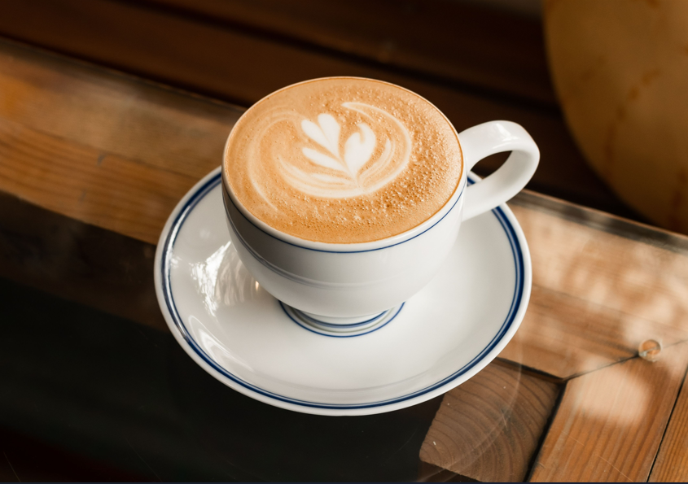

About us

Anteiku Cafe is a coffee shop inspired by the anime series "Tokyo Ghoul" This coffee shop is the perfect place to relax and enjoy coffee.

Anteiku Cafe is a coffee shop inspired by the anime series "Tokyo Ghoul" This coffee shop is the perfect place to relax and enjoy coffee.